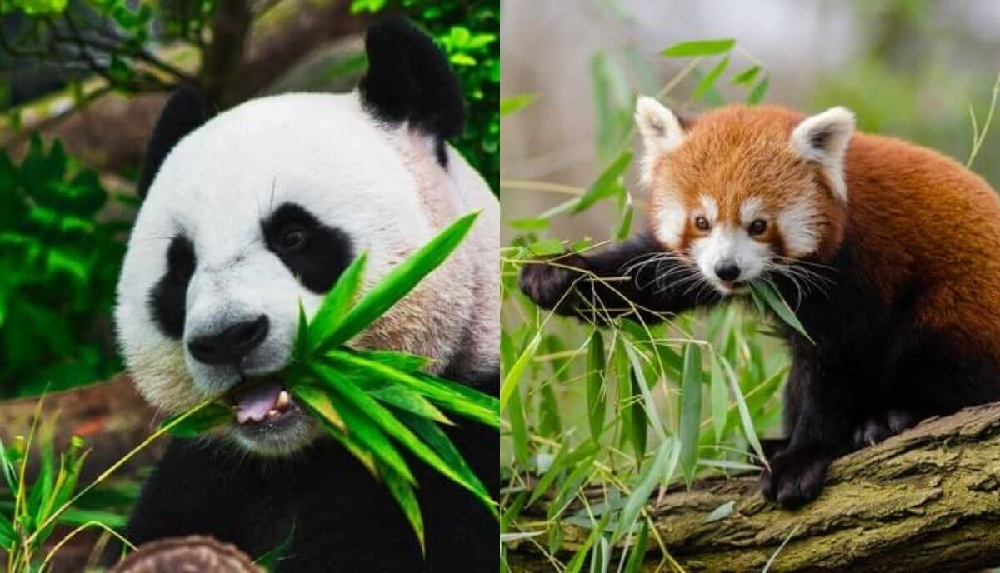

“Time spent with pandas is never wasted.” – Daniel Moldovan

The giant panda (Ailuropoda melanoleuca, sometimes panda bear or simply panda), is a bear species endemic to China. It is characterised by its bold black-and-white coat and rotund body. The name "giant panda" is sometimes used to distinguish it from the red panda, a neighboring musteloid. Though it belongs to the order Carnivora, the giant panda is a folivore, with bamboo shoots and leaves making up more than 99% of its diet. Giant pandas in the wild occasionally eat other grasses, wild tubers, or even meat in the form of birds, rodents, or carrion. In captivity, they may receive honey, eggs, fish, yams, shrub leaves, oranges, or bananas along with specially prepared food.
Types of pandas
Panda breed
Traits
Giant panda
Prefer freedom of being alone, and sleep in the daytime and look for food in the night.
Red panda
Slightly larger than a domestic cat with a bear-like body and thick russet fur.
Pandas have excellent camouflage for their habitat.
Pandas can swim and even climb trees.
They spend a lot of their day eating.
Predators
Although adult giant pandas have few natural predators other than humans, young cubs are vulnerable to attacks by snow leopards, yellow-throated martens, eagles, feral dogs, and the Asian black bear. Sub-adults weighing up to 50 kg (110 lb) may be vulnerable to predation by leopards.